SMO regression for SVM with PUK kernel in Weka
This post shows a use in Weka of the SMOreg regressor (Sequential Minimal Optimization) which is an efficient machine learning algorithm for SVM (Support Vector Machine)
to implement the approximation of one-variable continuous and limited real functions defined in a range of reals via PUK kernel (Pearson VII function-based Universal Kernel);
the objective is to demonstrate that classic machine learning regression can achieve interesting levels of accuracy with extremely short learning times.
Although MLP (Multi Layer Perceptron) type neural networks can be considered universal function approximators (see Fitting with highly configurable multi layer perceptrons on this website),
a classic supervised machine learning regression algorithm, like the one presented here, can reach acceptable levels of accuracy and with a significantly lower computational cost than that of an MLP.
In the real world datasets pre-exist the learning phase, in fact they are obtained by extracting data from production databases or Excel files,
from the output of measuring instruments, from data-loggers connected to electronic sensors and so on, and then used for the following learning phases;
but since the focus here is the regression itself and not the approximation of a real phenomenon, the datasets used in this post have been synthetically generated from mathematical functions:
this has the advantage of being able to stress the algorithm and see for which types of datasets the algorithm has acceptable accuracy and for which the algorithm is struggling.
Complete sequence of steps
Launch the Weka program of the University of Waikato (New Zealand);
in this post the version of Weka used is 3.8.3, but what I said also works with previous versions; Weka requires that the Java runtime is installed correctly.
After the Weka program is launched, the following window appears:

When the Weka Explorer window is displayed:
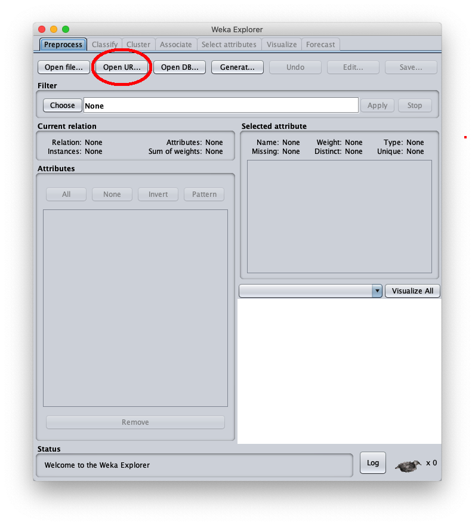
press the Open Url... button, highlighted in red, to load the dataset in .arff format
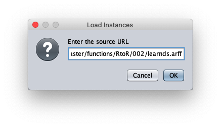
paste the dataset url 002/learnds.arff and press Ok.The loaded synthetic dataset is generated with the sinusoid function $f(x)=\sin x$ within the interval $[-2 \pi, 2 \pi]$; the Weka Explorer window (located on the Preprocess tab) looks like this:

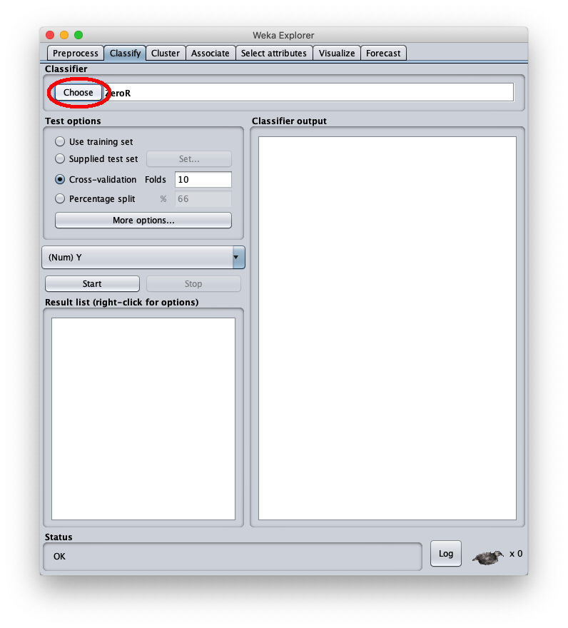
To choose the regression algorithm in question, press the Choose button and this popup is shown on the screen:
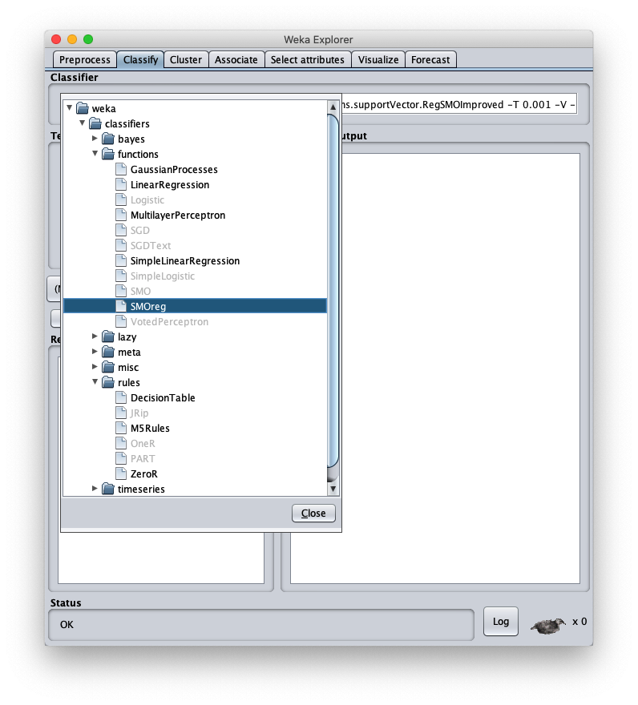
and choose the SMOreg regressor under the functions category; the user interface looks like this:
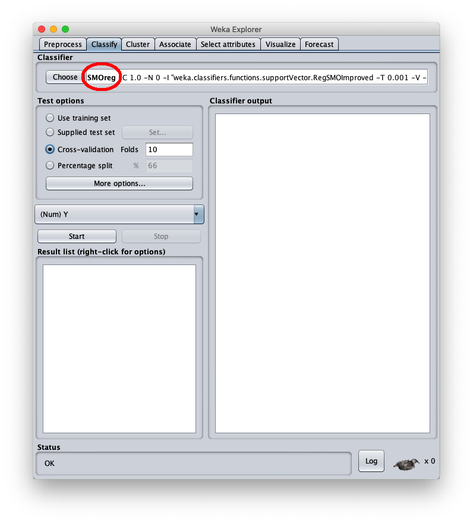
Then press the SMOreg label to configure the parameters of the regression algorithm Sequential Minimal Optimization (abbreviated SMO):

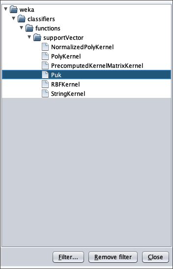
and choose the PUK algorithm and the previous window becomes like this:

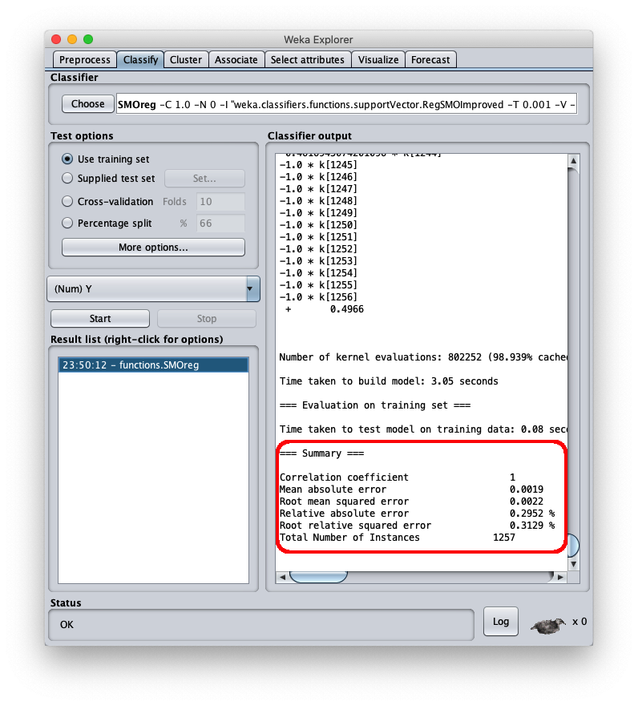
Note that the mean square error is 0.0022, which is a very interesting value.To apply the test dataset to this newly trained model select the radiobox Supplied test set
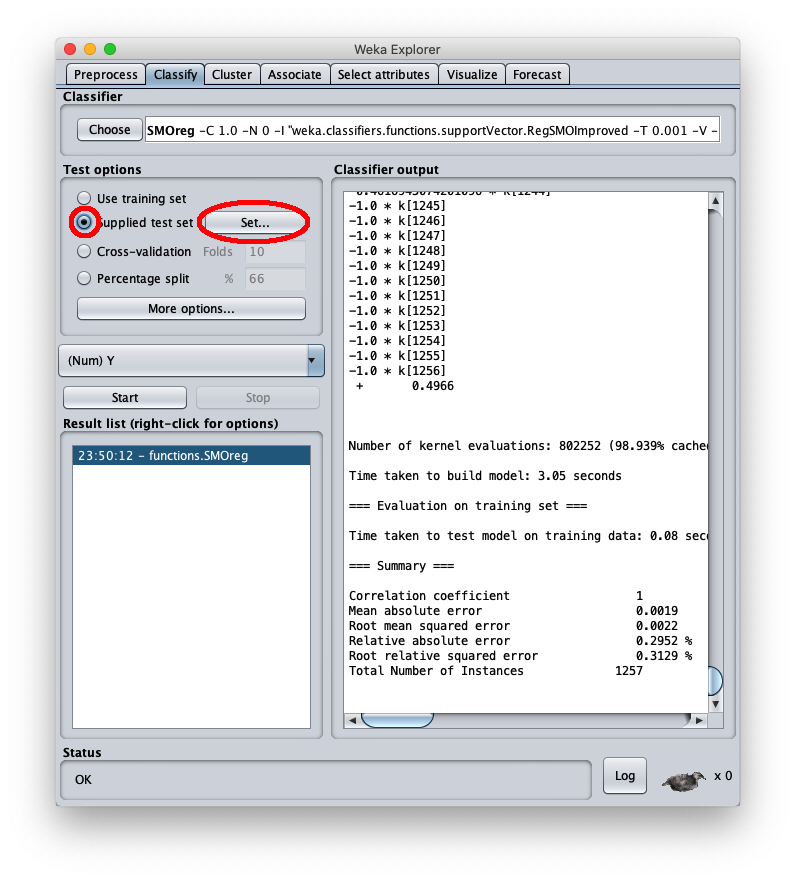
to press the Set.. button as highlighted in red; the following popup is shown:

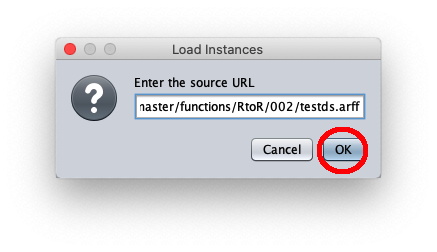
paste the dataset url 002/testds.arff and press Ok.The caller window shows general information about the test dataset:
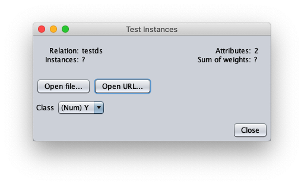
and by pressing Close you return to the Weka explorer window (always in the Classify tab):


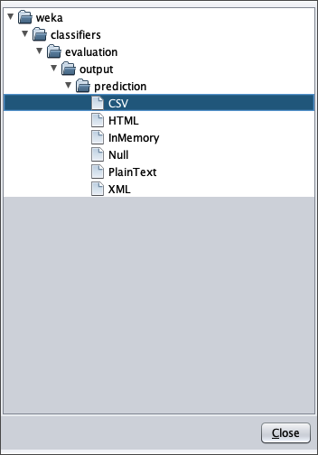
where you have to choose CSV and return to the calling window (the More options):
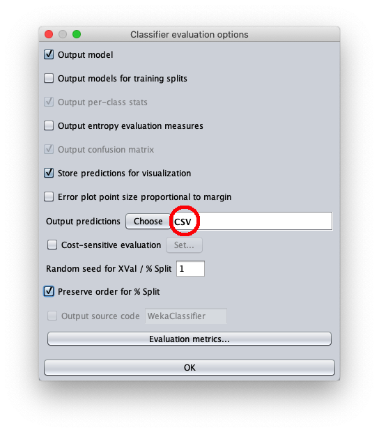
and click on the CSV label to set two options:
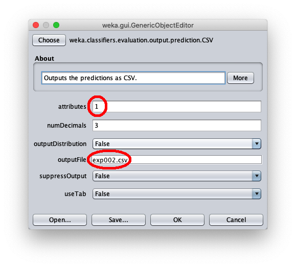
namely:
- in attributes enter the value 1 to write in the output cvs file also the value of the independent variable $x$
- in outputFile enter the path to the csv file that Weka will create/overwrite when the test dataset is applied to the learned model.
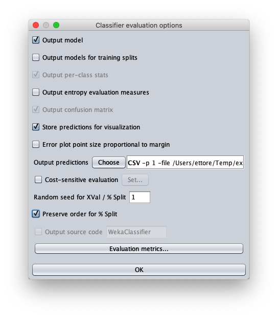
and by pressing Ok you return to the Weka explorer window (always in the Classify tab).
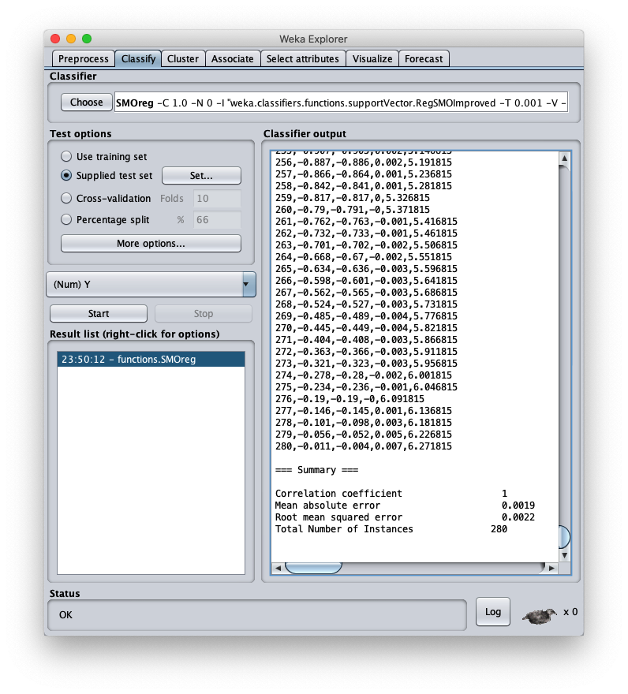
At this point you are ready to apply the test dataset (the testds.arff file loaded first) to the trained model;press the right button of the mouse on the model and on the menu that opens choose Re-evaluate model on current test set:
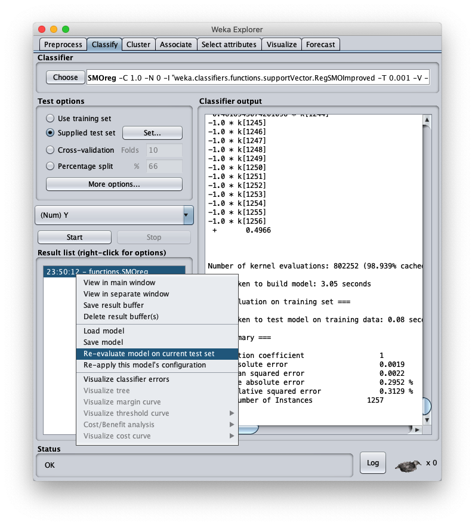
After a few seconds of processing the right part of the window shows the metrics of the test dataset application to the model;the mean square error is 0.0022, which is a very interesting value; the final part of the csv file is visible in the same area; by scrolling the area you can see the entire csv file, which however has been saved to disk (setting Output predictions).

- inst# the index of line 1-based (remember that the first line of the file is the header and is to be considered as line 0)
- actual the value of the dependent variable of the test dataset
- predicted the corresponding value calculated by the model
- error the difference between present value and predicted value
- X the value of the independent variable $x$
With any system of Cartesian charts from csv files plot the X/Y scatter charts of the pairs:
- X and actual
- X and predicted
Microsoft Excel has been used here, but any equivalent software or even an online web service is fine; the result is as follows:
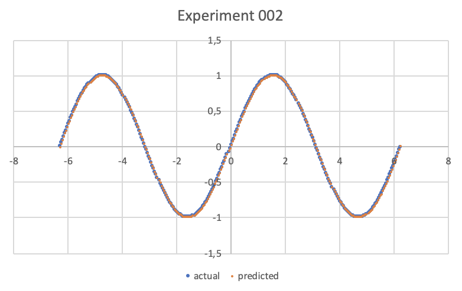
and as you can see the orange dots (the predicted ones) cover almost perfectly the blue dots (the test data), a sign that the regression had an excellent outcome.
Alternatives
For examples of polynominal approximation in .NET see Polynomial regression with Accord.NET.
For more information on the approximation of a real function of a variable with an MLP see One-variable real-valued function fitting with TensorFlow and One-variable real-valued function fitting with PyTorch.